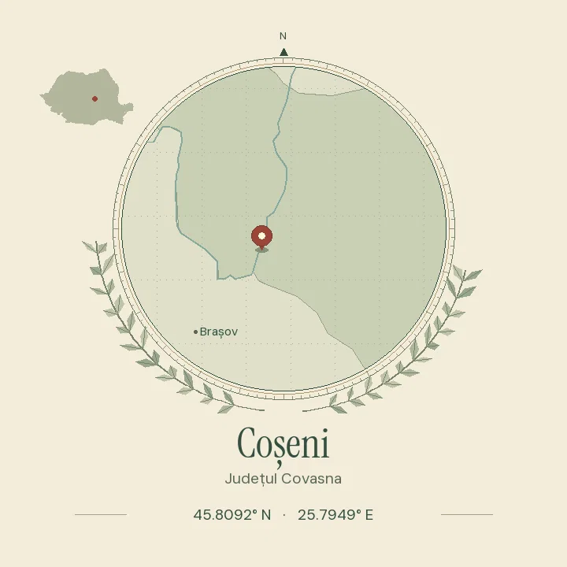
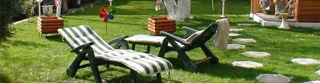
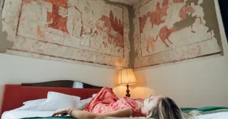
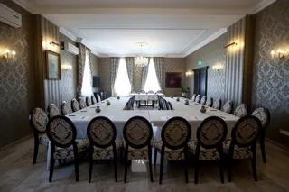
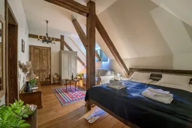
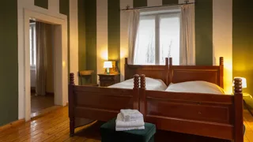
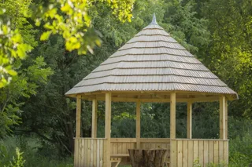
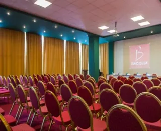
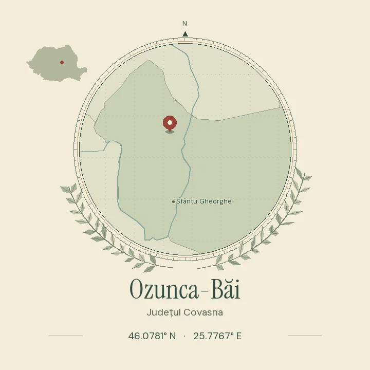
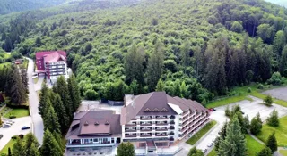

Locații de nuntă în județul Covasna
- locații în director
- 14
- cu cazare în registrul SITUR
- 4
- medie ponderată Google
- 4,5 / 5
- evaluări Google
- 6.798
Cum alegi unde mergi la vizionare
În acest județ puteți compara o formulă cu cort la Polixenia Culinary Estate și una cu cină pe terasă la Zabola Estate. Clarificați pentru fiecare ofertă unde se montează ringul de dans și ce vede un invitat așezat la masa cea mai îndepărtată.
Pentru Polixenia, căutați adresa din Vârghiș înainte de a stabili transportul. Cortul de pe domeniu și terasa acoperită de la Zabola răspund diferit unei după-amieze răcoroase. Discutați unde se primește familia înainte de masă și ce distanță rămâne de parcurs pe afară. Rugați fotograful să propună câte un loc pentru portrete la fiecare adresă chiar dacă nu se poate folosi grădina.
Două adrese pentru o zi de vizionări
Pe hartă, între aceste două proprietăți sunt 5,2 km în linie dreaptă. Deschide indicațiile de drum din fișe ca să vezi traseul pe șosea înainte de a stabili a doua întâlnire.
- Hotel Clermont · Strada Mihai Eminescu 225A, 525200 Covasna
- Zabola Estate - Transylvania · Str. Principala nr. 437, 527190 Zăbala
Spații exterioare menționate de operatori
- Polixenia Culinary Estate · Nuntă în cort pe domeniul castelului
- Zabola Estate - Transylvania · Cină de nuntă pe terasă acoperită și dans afară
Explorează după localitate
Toate locațiile din județul Covasna
Ordinea ține cont de nota Google și de numărul evaluărilor. Cum calculăm ordinea

Hartă ilustrată Covasna · Pensiune
Saciova Hills
În relatarea unei sosiri de seară la Saciova Hills, gazdele au sunat cu o zi înainte ca să întrebe dacă oaspeții doresc să găsească cina pregătită.
Saciova, 527145 Covasna+40 745 303 980
Hartă ilustrată Coșeni · Local pentru evenimente
Conacul Nagy
Conac cu 7 camere, saună și ciubăr la Coșeni, cu gulaș și papricaș gătite de gazde. Potrivit pentru o nuntă foarte restrânsă? Ce să întrebi.
Strada Coșeni 120D, 520002 Coșeni+40 749 921 680
Fotografie a locației · Sursa fotografiei Covasna · Pensiune
Casa din Parc
Pensiune liniștită la intrarea în parcul din Covasna, cu cazare între 250 și 450 de lei pe noapte. Utilă pentru găzduirea invitaților la nuntă.
Str. Gheorghe Doja 4, 525200 Covasna+40 758 680 614
Fotografie a locației · Sursa fotografiei Covasna · Pensiune
Pensiunea Casa Cecilia Covasna
Pensiunea Casa Cecilia Covasna, Covasna. Un oaspete de la Casa Cecilia amintește împreună curtea, foișorul și parcarea.
Strada Bercsényi Miklós 4, 525200 Covasna+40 744 707 060
Fotografie a locației · Sursa fotografiei Covasna · Hotel
Hotel Clermont
Hotel cu spa și piscină interioară în Covasna, cu 2.398 de evaluări; oaspeții laudă liniștea și mâncarea, dar unii critică curățenia camerelor.
Strada Mihai Eminescu 225A, 525200 Covasna+40 267 342 123
Fotografie a locației · Sursa fotografiei Tălișoara · Pensiune
Castelul Daniel din Tălișoara
Castel-pensiune cu spa și restaurant pe DJ131 la Tălișoara, 1.085 de evaluări. Nunți pomenite pe site; atenție la izolarea fonică.
DJ131, 520064 Tălișoara+40 725 942 787
Fotografie a locației · Sursa fotografiei Moacșa · Pensiune
Conacul Benke
Conac în Moacșa, Covasna, cu terasă acoperită, cramă și grădină de vară de închiriat, plus piscină și saună. Ce să clarifici pentru eveniment.
Moacșa, 360, 527120 Moacșa+40 267 345 788
Fotografie a locației · Sursa fotografiei Dalnic · Hotel
Gaál Kúria
Conacul Gaál din Dalnic propune nunți în aer liber pe un domeniu de 30 de hectare. Aflați cum sunt distribuite camerele în conac, hambar și Casa Gaál.
Dalnic 90, 527121 Dalnic+40 727 319 323
Fotografie a locației · Sursa fotografiei Zăbala · Hotel
Zabola Estate - Transylvania
La Zabola Estate, nunta se întinde pe trei zile. Vedeți capacitățile sălilor din fostele grajduri, terasa boltită și opțiunile de meniu și ceremonie.
Str. Principala nr. 437, 527190 Zăbala+40 724 003 658
Fotografie a locației · Sursa fotografiei Vârghiș · Castel
Polixenia Culinary Estate
Polixenia Culinary Estate. Un invitat care a petrecut un weekend la nunta unor prieteni la Polixenia descrie camere tematice, liniște și mâncare bună.
205, 527180 Vârghiș+40 741 090 737
Fotografie a locației · Sursa fotografiei Covasna · Hotel
Bacolux Santis, Covasna
Hotel de tratament pe Strada Unirii din Covasna, cu restaurant, bar și grădină; nunțile nu sunt documentate, iar recenziile vorbesc mai ales de baza medicală.
Strada Unirii 6, 525200 Covasna+40 371 057 070
Hartă ilustrată Ozunca-Băi · Cabană
Conacul Negoiță
Un vizitator de la Conacul Negoiță descrie o cabană într-un loc liniștit din pădure, cu curte amenajată, saună și ciubăr.
Ozunca-Băi nr. 1, 527019 Ozunca-Băi+40 729 435 384
Fotografie a locației · Sursa fotografiei Covasna · Hotel
Hotel Bradul
Hotel de tratament în Covasna cu băi minerale și restaurant lăudat pentru porții mari și prețuri mici. Clădirea e criticată ca învechită.
Strada Mihai Eminescu 225, 525200 Covasna+40 267 340 081
Hartă ilustrată Covasna · Bed & Breakfast
Botimi
Pensiune în Covasna cu terasă acoperită și foișor, unde un grup de 30 de persoane a mâncat și a dansat. Recenzii foarte împărțite despre curățenie.
Strada Kálvin 2, 527005 Covasna+40 766 417 175
Întrebări despre locațiile din județul Covasna
Unde pot dormi invitații în județul Covasna?
În registrul de cazare SITUR găsim Casa din Parc (16 locuri de cazare), Hotel Clermont (218 locuri de cazare), Bacolux Santis, Covasna (30 de locuri de cazare). Verifică ce camere sunt libere pentru noaptea evenimentului.
Ce spații sunt documentate pentru evenimente în aer liber în județul Covasna?
Zabola Estate - Transylvania — Cină de nuntă pe terasă acoperită și dans afară. Polixenia Culinary Estate — Nuntă în cort pe domeniul castelului.
Care locație din județul Covasna are cele mai multe evaluări Google?
Hotel Clermont are 2.398 de evaluări în profilul Google folosit la documentare. Evaluările acoperă și alte experiențe la proprietate, inclusiv vizitele fără eveniment.
Unde apare o intrare accesibilă în județul Covasna?
Profilurile Google indică o intrare accesibilă la Polixenia Culinary Estate. Pentru o cununie în exterior, cere detalii despre traseul dintre intrare și zona cu scaune.